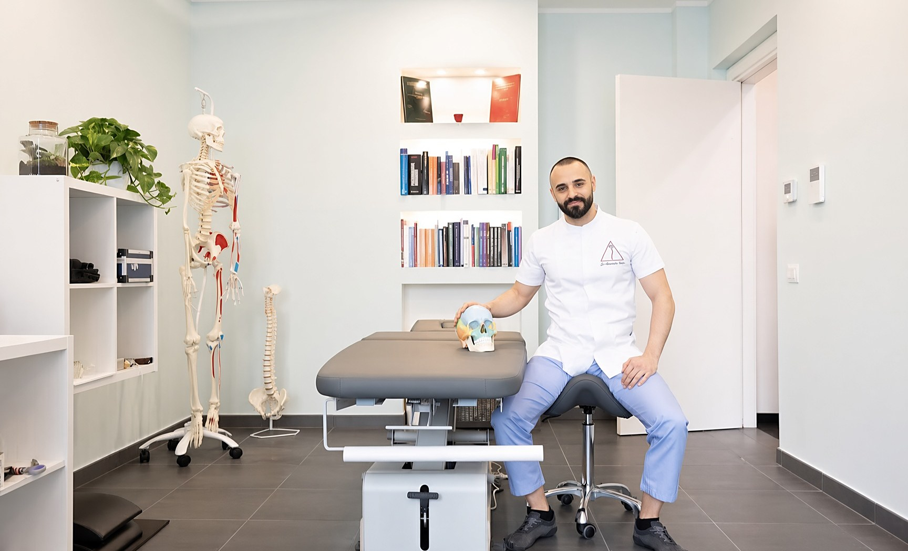
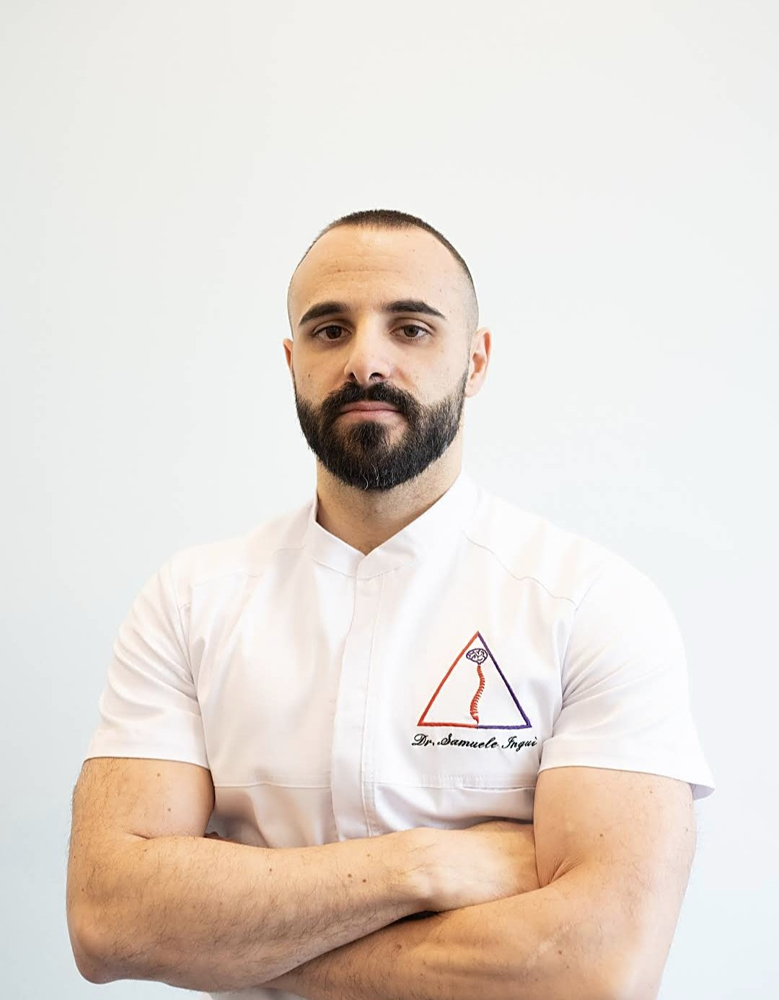
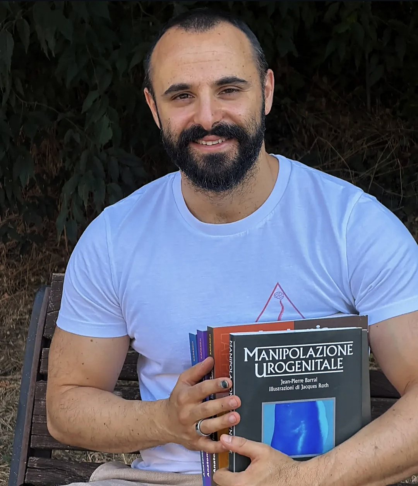
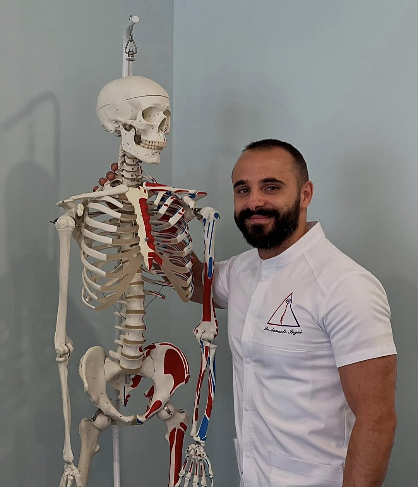
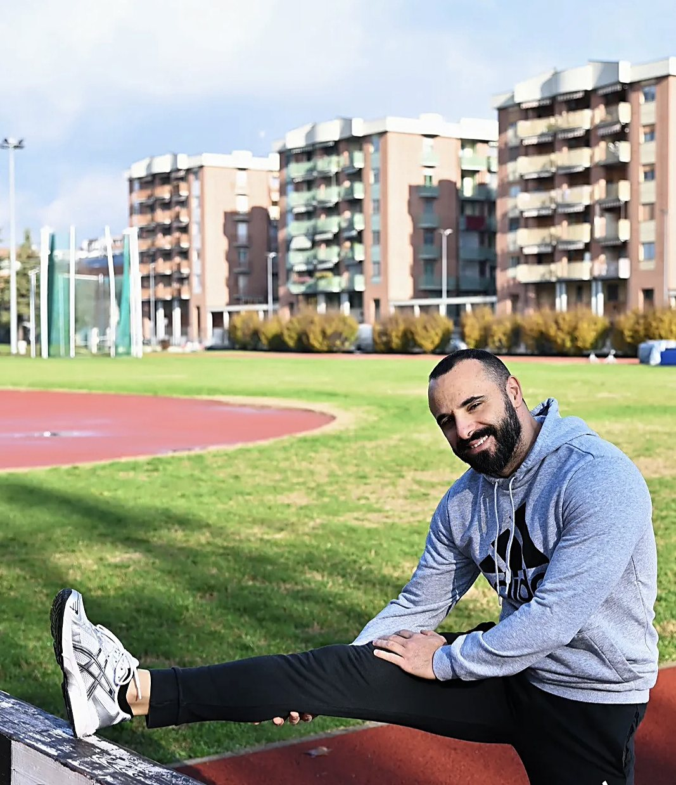
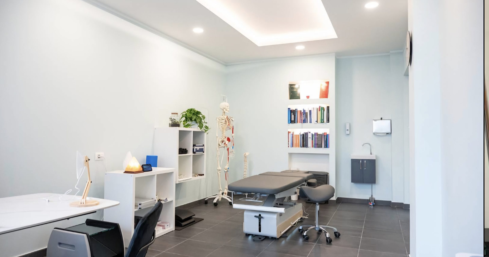
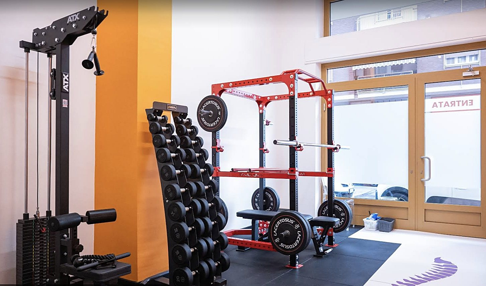

Risolvo in poche sedute dolori posturali, muscolari e viscerali. Osteopata, chinesiologo e posturologo. Studio in Via Porta Romana, ad Asti.

Sono Samuele Inguì e ricevo ad Asti, in Via Porta Romana. Un dolore lo leggo con tre lenti diverse, e spesso la risposta sta lontano dal punto che fa male.
Tre strumenti diversi, usati sulla stessa persona: quello che le mani non spiegano lo spiega la postura, e quello che la postura non spiega lo spiega il modo in cui ti muovi.

Le mani sulle articolazioni, sui muscoli e sugli organi. È il lavoro su cui costruisco il resto: dolori posturali, muscolari e viscerali.

Come stai in piedi, come stai seduto, come dormi. Molti dolori che tornano sempre uguali hanno qui la loro spiegazione.

Il gesto che ripeti mille volte al giorno, al lavoro o nello sport. Rimetterlo a posto è quello che tiene il risultato anche dopo l'ultima seduta.

È la promessa con cui mi presento, ed è anche il modo in cui lavoro: il percorso finisce quando il dolore è passato.
Via Porta Romana 15
14100 Asti
Si viene su appuntamento. Il modo più veloce per prenderlo è un messaggio su WhatsApp: scrivimi due righe e ci sentiamo.

Lo studio è ad Asti, in Via Porta Romana 15. Sulla mappa lo trovi come Fisiologicamente Osteopatia: dal sito c'è il pulsante che te la apre già puntata.
Con un messaggio su WhatsApp al 320 366 0511. Raccontami che disturbo hai e da quanto tempo: quando ci sentiamo ho già in mano metà della risposta.
Dolori posturali, muscolari e viscerali. Li affronto da osteopata, da posturologo e da chinesiologo: tre modi di leggere lo stesso corpo, usati sulla stessa persona.
Poche. È la prima cosa che dico a chi mi scrive, perché è il timore più comune: che diventi un abbonamento a vita. Ci si rivede solo se serve.
Rispondo io. Se preferisci sentirmi a voce chiama pure: quando sono sul lettino ti richiamo appena finisco.